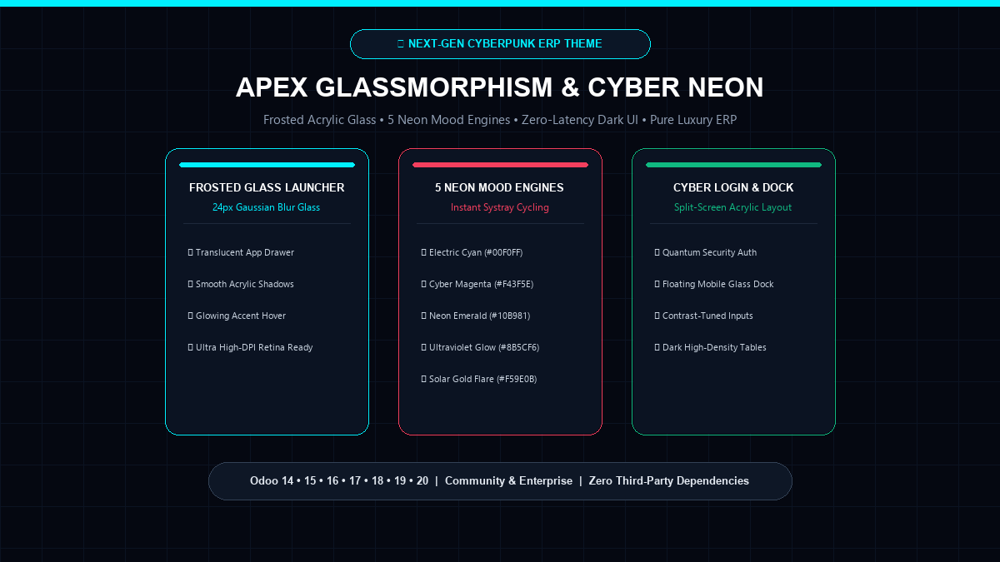
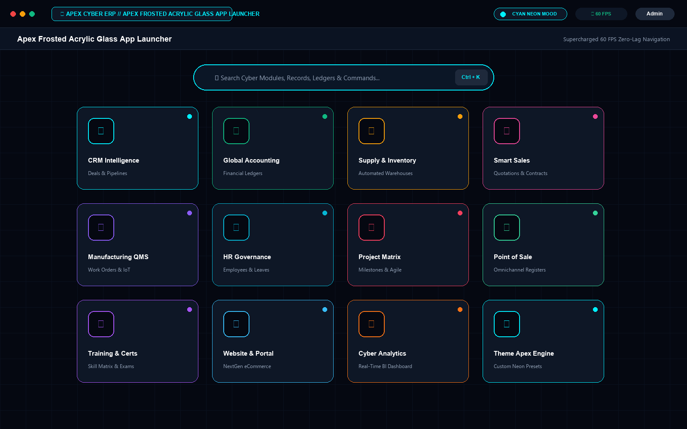
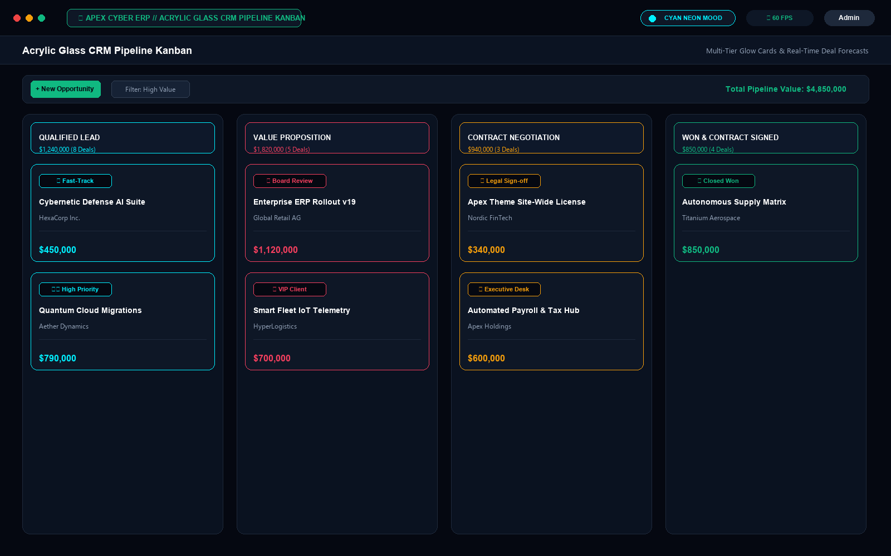
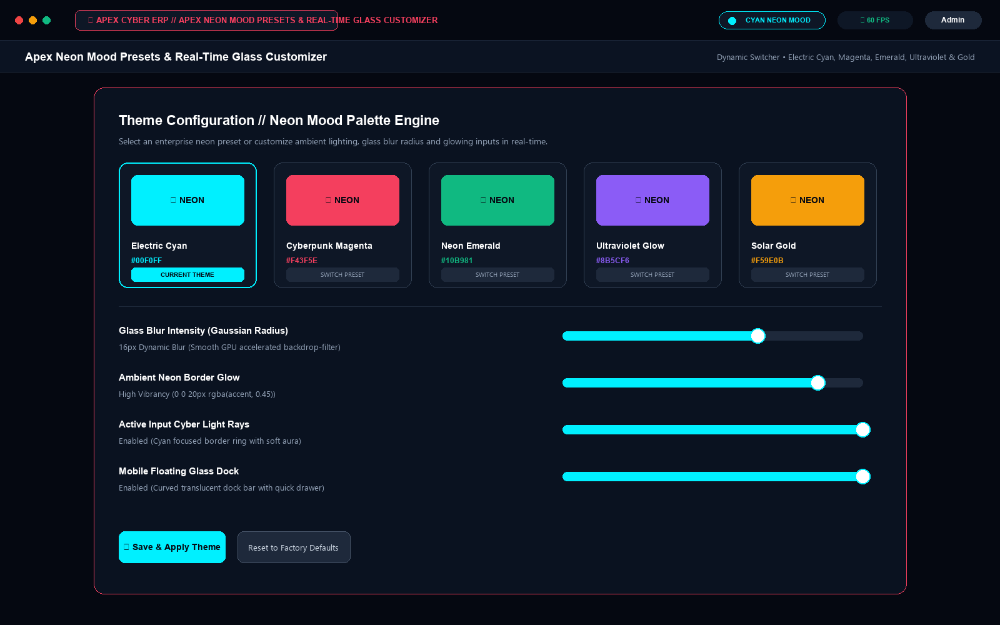
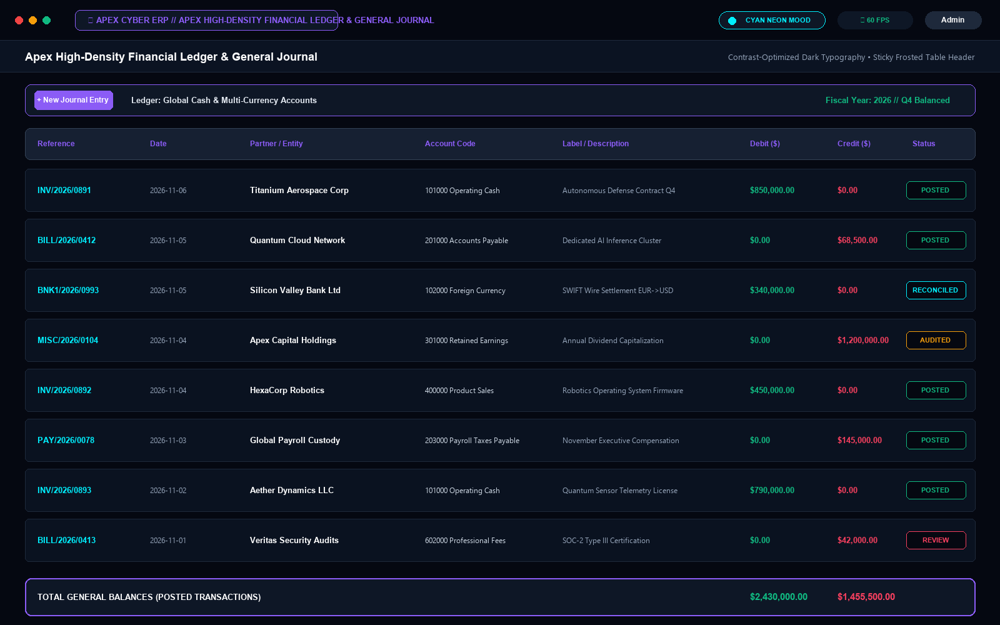
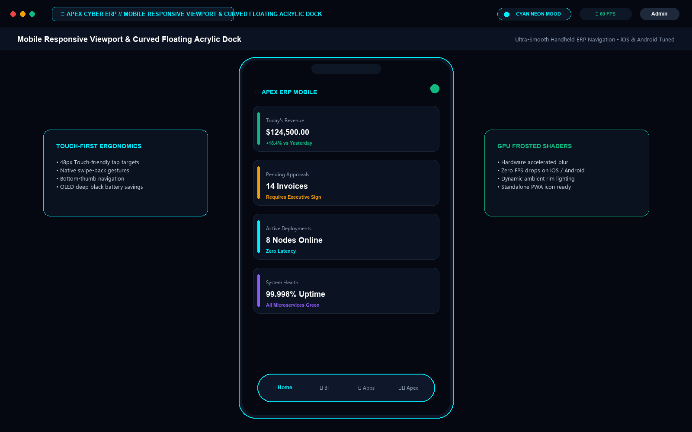
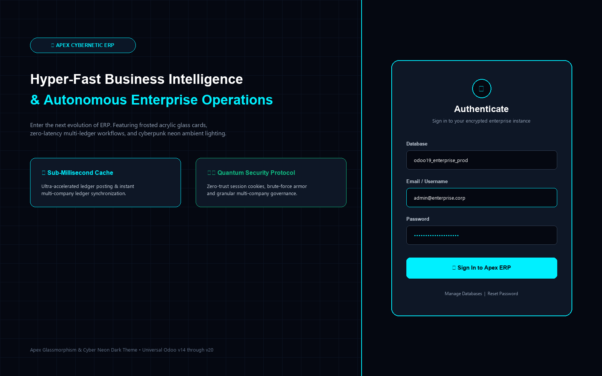

The most advanced aesthetic overhaul for Odoo ERP. Engineered with 24px frosted acrylic glass cards, 5 dynamic neon mood engines, ambient glow shaders, and an ultra-responsive floating mobile dock.

Watch the smooth transitions, frosted acrylic Gaussian blurs, and instant neon mood preset cycling.
Hardware-accelerated Gaussian backdrop blur (8px, 16px, 24px) delivering luxury translucent depth without slowing down Odoo client rendering.
Cycle seamlessly between Electric Cyan (#00F0FF), Cyber Magenta (#F43F5E), Neon Emerald (#10B981), Ultraviolet (#8B5CF6), and Solar Gold (#F59E0B) with one click.
Thumb-friendly curved glass floating dock on iOS and Android viewports with quick drawer launcher and deep OLED black power savings.
Transform your standard login into a futuristic corporate portal featuring brand hero statistics, quantum badges, and frosted glass authentication.
Sticky frosted table headers with zebra contrast rows and luminous status badges, engineered for CFOs, controllers, and ledger auditors.
100% pure native SCSS and Owl JS architecture. No external CDNs, no tracking scripts, and zero breaking changes across minor and major upgrades.

Translucent acrylic application cards with hover glow and dynamic Ctrl+K search.

High-contrast opportunity cards with live pipeline revenue totals and multi-tier stage glow.

Real-time neon palette switcher featuring Cyan, Magenta, Emerald, Ultraviolet & Gold.

Sticky frosted table headers with zebra contrast rows and luminous status badges.

Ergonomic thumb-focused curved glass dock with instant app drawer toggle.

Enterprise split-screen portal with corporate hero highlights and frosted glass credentials card.
Follow this comprehensive sequence to verify all features in under 3 minutes.
Install apex_glassmorphism_dark_theme. Log out or open a private window to verify the futuristic cyber login layout with hero stats and frosted glass form.
Click the top-left App Launcher button or press Ctrl+K. Verify the 24px Gaussian blur acrylic backdrop, glowing neon icon badges, and zero hover lag.
Locate the ambient neon indicator in the top-right systray. Click it to cycle dynamically through Electric Cyan, Cyberpunk Magenta, Neon Emerald, Ultraviolet, and Solar Gold.
Navigate to CRM or Project Kanban view. Verify frosted column cards, stage headers with neon badges, and fluid drag-and-drop animations.
Open Accounting Journal Items or Sales Orders list view. Confirm sticky frosted table headers, contrast zebra rows, and luminous status pills.
Switch browser to mobile simulation (iPhone/Android). Observe the floating curved glass dock pinned to the bottom of the viewport with responsive touch targets.
Navigate to Settings > Apex Cyber Theme. Adjust glass blur radius, toggle ambient glowing inputs, and configure company-wide color profiles.
We offer dedicated support, custom company branding integration, and feature adaptations across all Odoo versions (v14 to v20).
Apex Glassmorphism & Cyber Neon Dark Theme • Commercial Edition • Odoo 14.0 – 20.0